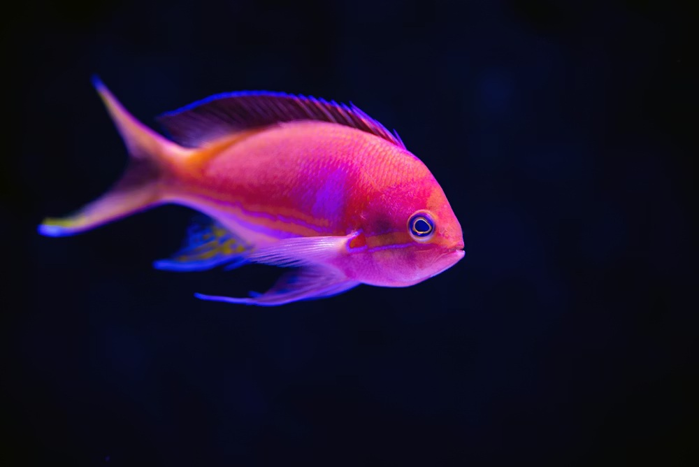

Aquaculture-Agriculture
The "Fertigation" Model: Using nutrient-rich fish pond water to irrigate and fertilize crops.
1. Site Feasibility & Pre-requisites
💧 Water Source
Consistent Supply.
This model relies on water exchange. You need enough water to fill the pond and refill it after
pumping 10-20% out for the crops daily.
🥬 Crop Selection
Leafy Greens.
Spinach, Kale, and Lettuce thrive on the high-nitrogen water from fish ponds. Orchards
(Banana/Papaya) also respond very well.
🐟 Fish Species
Hardy Breeds.
Catfish and Tilapia are ideal because they can tolerate fluctuating water levels and
produce high waste (rich fertilizer).
2. Infrastructure & Layout
The layout must facilitate the movement of water from the pond to the field and back (optional).
🚧 Construction Specs
- Gravity Flow: Ideally, place the fish pond at a higher elevation than the crop fields so water flows down without pumps.
- Silt Trap: Install a simple mesh filter at the pond outlet to stop large fish waste solids from clogging drip lines.
- Drainage: Ensure crop fields have drainage channels that can route excess water to a bio-filter or secondary pond.
3. The Nutrient Cycle
Fish excretion is essentially liquid Ammonia/Nitrate fertilizer. We treat the pond as a "Liquid Compost Pit".
Ammonia & Nitrates
Pumped to Field
Absorb Nutrients
Fresh Water to Pond
4. Operational Calendar
Water management is the key operational task here.
Pump out 10% of the pond bottom water (sludge rich). Direct this to fruit trees or high-demand crops.
Refill the pond with fresh water. This improves oxygen for fish while stimulating their appetite.
Check the irrigation filters. Fish water contains algae which can clog drip tapes quickly.
Once a year, drain the pond completely. Scrape the bottom sludge—this is "Black Gold" fertilizer for preparing vegetable beds.
5. Risks & Solutions
⚠️ RISK: CLOGGING
Algae Blockage. Fish water is full of algae. If you use standard Drip Irrigation, it will clog in days. Solution: Use "Flood Irrigation" or specialized "Button Drippers" that can be cleaned.
| Problem | Solution |
|---|---|
| Salinity Buildup | Rare in freshwater, but possible. Test soil EC (Electrical Conductivity) monthly. |
| Over-Fertilization | Crops look "burnt". Dilute pond water with fresh water before irrigating. |
6. Economics
💰 Cost Savings
- Fertilizer: Reduced by 100% for Nitrogen needs. Fish water is usually sufficient.
- Water Efficiency: Every drop serves two purposes (Fish home & Plant drink).
📈 Revenue
- Organic Premium: Crops grown without chemical fertilizers fetch higher prices.
- Fish Sales: A high-protein bonus crop harvested every 6 months.